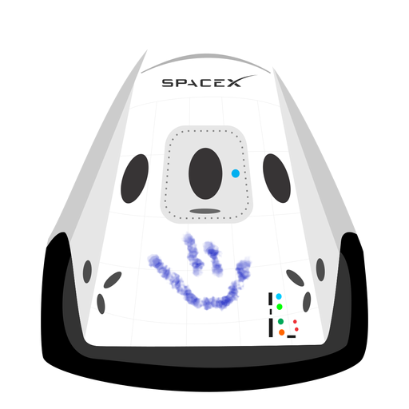

Hyperblog
Tu blog de confianza
Este es el título atractivo e interesante del post
Y este es el párrafo inicio donde vamos a explicar las cosas increíbles que se pueden hacer con ramas XD

Los blogs son la mejor forma de compartir información y tus ideas. Mucho más que ira conferencias o salir en Youtube. Excepto si eres un rockstar. Pero estadisticamente no lo eres... por ahora.
Suscribete y dale like.